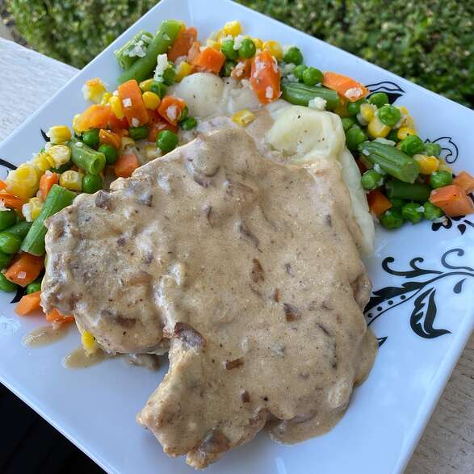

Slow Cooker French Onion Pork Chops

A lighter version of a wonderful main dish. Easy to prepare and add some quick sides to. Yummy!
Ingredients
- Nonstick cooking spray
- 5 pork chops
- 1 pinch garlic salt, or to taste
- 1 (10.5 ounce) can french onion soup
- 1 (8 ounce) container light sour cream
- 2 tablespoons all-purpose flour
Directions-
- Step 1: Spray a skillet with cooking spray and heat over medium-high heat. Quickly brown pork chops in the skillet, seasoning with garlic salt, 5 to 7 minutes total. Transfer to a slow cooker and pour French onion soup on top.
- Step 2: Cover and cook on Low for 8 hours.
- Step 3: Remove the chops and keep warm. Add sour cream and flour to the slow cooker, mix well, and warm until slightly thickened, 10 to 15 minutes. Serve sauce over the chops.